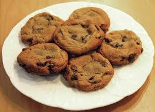

Chocolate Chip Cookies!
Here's what you're gonna be making:

Blah blah blah blah my entire life story and a quote
that was definetely said, we don't care. Here's how to
make cookies.
Here's what you need
- 1 cup butter
- 1 cup white sugar
- 1 cup brown sugar
- 2 teaspoons vanilla extract
- 2 eggs
- 3 cups flour (give or take)
- 1 teaspoon baking soda
- 1/2 teaspoon baking powder
- 1 teaspoon salt (if using unsalted butter)
- 2 cups of chocolate chips (roughly)
Now that you've got your stuff, here are your steps
- Preheat oven to 375 and put the butter out to soften.
- Beat the butter and both sugars together in a large
bowl.
- Add eggs one at a time and beat in.
- Add and mix in vanilla.
- Mix flour, baking soda, baking powder, and salt together
in a medium bowl.
- Slowly combine dry mixture with wet ingredients and mix
until smooth.
- Add chocolate chips and any other mix-ins.
- Put parchement paper over a baking sheet and scoop
cookie dough onto it, leaving a little space.
- Put into oven and let bake until golden brown, around
9-12 minutes.
- Let cool.